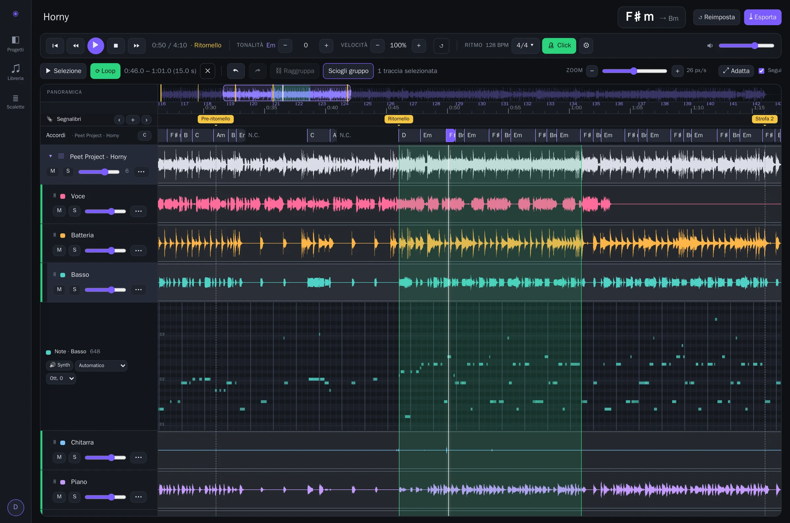
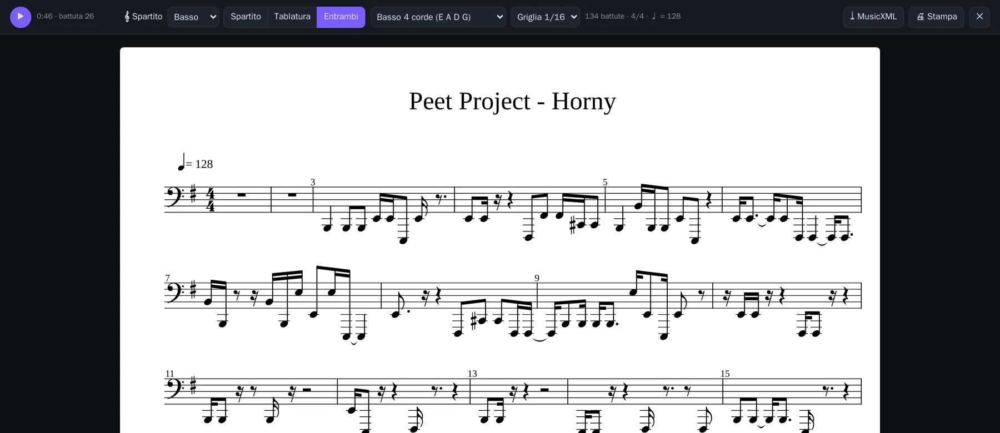

Separazione con l'AI
Demucs v4 divide il brano in voce, batteria, basso e altro, oppure in 6 tracce con chitarra e piano. Muto, solo e volume per traccia.
Noises è lo studio di pratica per musicisti che gira sul tuo server: isola voce, batteria e basso con l'AI, cambia tonalità e velocità in tempo reale, legge accordi e spartiti, e ti dà un click che segue davvero la band.

"Horny" separato in 6 tracce, con accordi, segnalibri, piano roll del basso e loop sul ritornello.
Dall'ascolto alla base per il concerto, nello stesso posto. Senza abbonamenti e senza caricare la tua musica sul cloud di qualcun altro.
Demucs v4 divide il brano in voce, batteria, basso e altro, oppure in 6 tracce con chitarra e piano. Muto, solo e volume per traccia.
±12 semitoni e 50–150% di velocità, indipendenti e applicati in tempo reale nel browser. La tonalità del brano si aggiorna mentre trasponi.
170 accordi riconosciuti con BTC, anche sul brano non separato. Accordo corrente e successivo, notazione C D E o Do Re Mi, correzione a mano.
Trascrizione automatica di ogni traccia, piano roll modificabile e synth con otto suoni per ascoltare le note, anche un'ottava sopra.
MusicXML per pianoforte, batteria, chitarra e basso a 4 o 5 corde, con il cursore che segue la musica. Stampa, PDF ed export.
Il metronomo che segue i colpi reali della batteria, oppure il tempo medio o un BPM fisso. Pre-conteggio che porta sempre sull'"1".
Progetti con più brani, clip da tagliare e spostare, gruppi, segnalibri, annulla e ripeti. Trascini i file dal computer o importi da YouTube.
Metti in fila i progetti della serata: alla fine di un brano parte il successivo dopo la pausa che scegli, oppure aspetta il tuo Play.
Esporta in MP3, WAV, FLAC o MIDI solo le tracce attive, per esempio tutto tranne il tuo strumento, con click e pre-conteggio inclusi.
I batteristi veri non suonano come un metronomo. Noises rileva ogni colpo di cassa e aggancia il click al momento in cui il colpo si sente davvero.
● cassa registrata ▍ click ▍ primo tempo della battuta
Ogni traccia separata diventa uno spartito: pentagramma, tablatura o entrambi. È un punto di partenza da correggere nel piano roll, non un lavoro da rifare da zero.

Trascina un file audio nella timeline o incolla un link YouTube. Il brano entra nella libreria e nel progetto.
Dal menu ⋯ della traccia scegli separazione, accordi, ritmo e note. Tutto gira sul tuo server, anche senza internet.
Rallenta, trasponi, metti in loop il passaggio difficile, togli il tuo strumento, accendi il click. Poi esporta la base.
Un'unica immagine Docker con modelli e librerie già dentro. Gira su un PC, su un server o su un Raspberry Pi 4/5 a 64 bit, per più utenti, ognuno con la sua libreria.
$ git clone https://github.com/teopost/noises.git $ cd noises $ make up # build + avvio $ make open # http://localhost:8080
$ git clone https://github.com/teopost/noises.git $ cd noises && cp .env.example .env # in .env: immagine pronta della CI NOISES_IMAGE=ghcr.io/teopost/noises:latest $ make pull # scarica e avvia, niente build
Requisiti: Docker con Compose v2 e make. Il motore audio del browser richiede HTTPS oppure localhost.
Un server in Rust coordina librerie di riferimento per l'audio. Il browser fa il resto: mixa, cambia tonalità e velocità e tiene il click a tempo.
Noises è distribuito con licenza MIT: usalo, modificalo, condividilo.